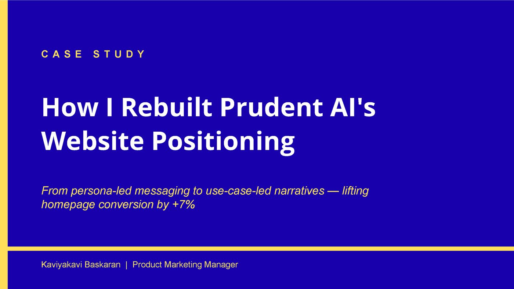
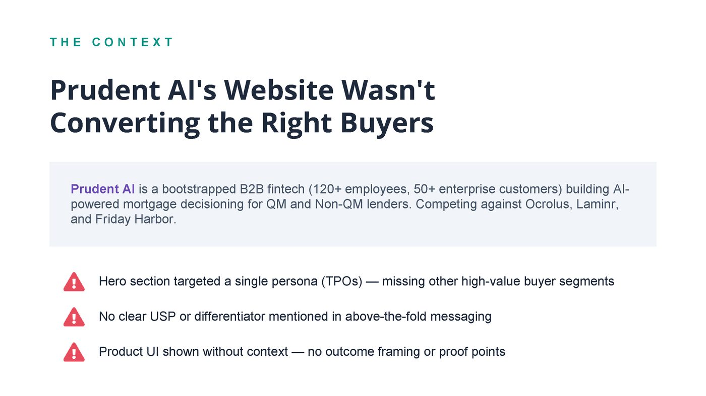
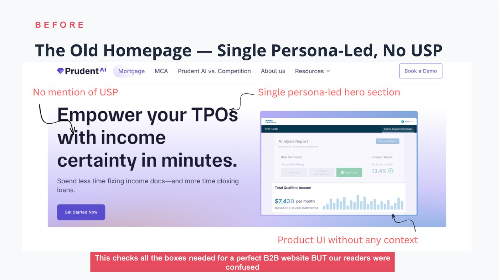
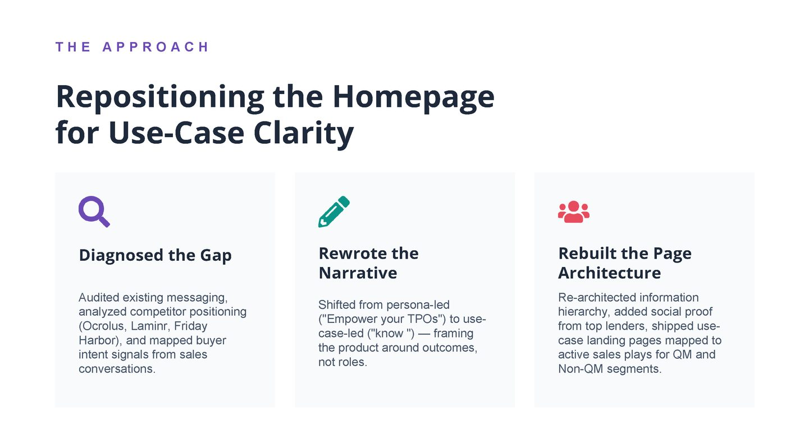
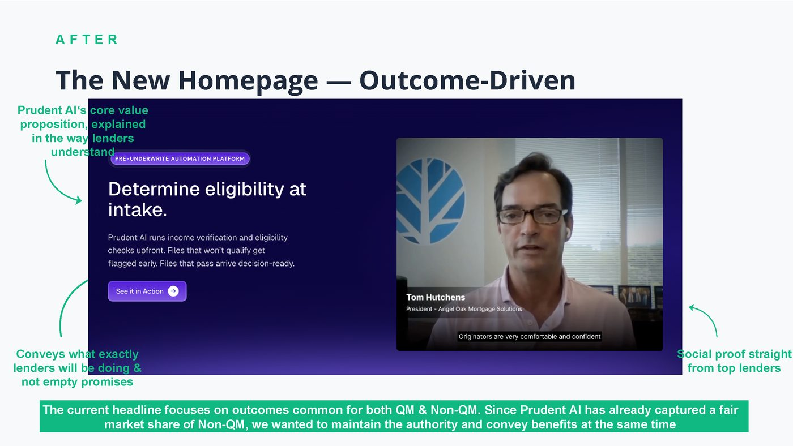
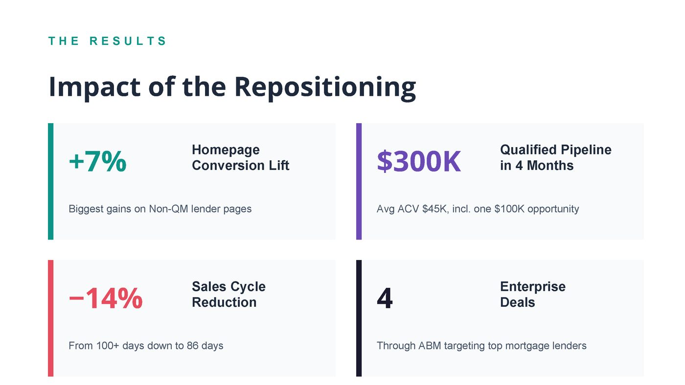
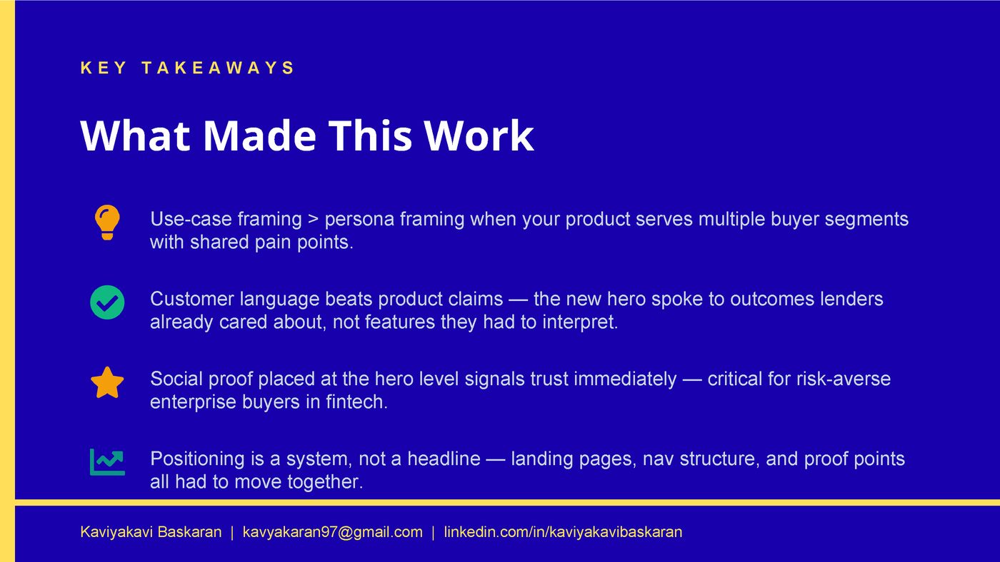

01
Positioning & messagingSLGPrudent AI
How I rebuilt Prudent AI's website positioning — from persona-led messaging to use-case-led narratives.
Full case study
1 of 7






1 / 7
Open as PDF ↓
Context
Prudent AI builds AI-powered mortgage decisioning for QM and Non-QM lenders. Bootstrapped, 120+ employees, 50+ enterprise customers. Competes against Ocrolus, Laminr, and Friday Harbor.
The old homepage had three problems: it targeted a single persona (TPOs) and missed every other buyer segment, had no mention of a USP or differentiator above the fold, and showed product UI without context — no outcome framing, no proof points.
The site technically had everything a B2B homepage is supposed to have. But the people reading it were confused.
The shift
Before · persona-led
Empower your TPOs
After · use-case-led
Know if your borrower can repay before the file goes downstream
Outcome over role. One line that a lender could read and immediately place themselves inside.
What I did
- Diagnosed the gapAudited existing messaging, analysed how Ocrolus, Laminr, and Friday Harbor positioned themselves, and mapped buyer intent signals from real sales conversations.
- Rewrote the narrativeShifted from persona-led to use-case-led. Every headline had to survive the question: would a lender recognise their own Tuesday in this sentence?
- Rebuilt page architectureRe-architected the information hierarchy. Added social proof at hero level. Shipped use-case landing pages mapped to active sales plays.
Results
+7%Homepage conversion lift
3.5×Pipeline growth
−14%Sales cycle reduction